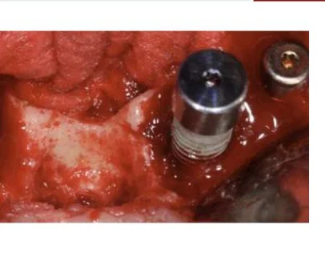

نسخه استخراجشده؛ ترجمه یا تأیید علمی انجام نشده است. وضعیت: captured
پریایمپلنتیت وضعیتی پاتولوژیک وابسته به پلاک در بافت اطراف ایمپلنت است که با التهاب مخاط و از دست رفتن پیشرونده استخوان نگهدارنده مشخص میشود.

و اگر داده خط پایه در دست نباشد — که در عمل بسیار شایع است — کارگاه ۲۰۱۷ آستانههای جایگزینی ارائه کرد: خونریزی و یا چرک هنگام پروب ملایم، بهعلاوه عمق پروب ۶ میلیمتر یا بیشتر، بهعلاوه سطح استخوان ۳ میلیمتر یا بیشتر آپیکالیتر از قسمت داخل استخوانی ایمپلنت.
این تأکید بر خط پایه، یک درس عملی روشن دارد: رادیوگرافی و ثبت عمق پروب در زمان تحویل پروتز، بخشی از درمان است، نه کار اضافه.
| ویژگی | پریودنتیت | پریایمپلنتیت |
|---|---|---|
| سرعت پیشرفت | معمولاً کندتر و خطیتر | سریعتر و اغلب غیرخطی |
| شکل ضایعه استخوانی | الگوهای متنوع | اغلب بشقابی یا دیوارهای دور تا دور |
| ارتشاح التهابی | محدودتر، با کپسول بافت همبند | گستردهتر و نزدیکتر به استخوان |
| علائم بیمار | اغلب بیسروصدا | اغلب بیسروصدا، گاهی چرک |
لقی ایمپلنت، نشانه پریایمپلنتیت زودرس نیست — نشانه از دست رفتن کامل اُسئواینتگریشن است، یعنی مرحله پایانی. منتظر ماندن برای لقی، یعنی از دست دادن کل فرصت درمان.
عوامل خطر با بیشترین شواهد: سابقه پریودنتیت، بهداشت ضعیف و نبود برنامه پایش منظم، و سیگار. دیابت کنترلنشده و سمان اضافی زیر لثه نیز شواهد قابل توجهی دارند.
رادیوگرافی پریاپیکال با تکنیک موازی، ابزار استاندارد پایش سطح استخوان اطراف ایمپلنت است. مزیت آن، امکان مقایسه دقیق با تصویر خط پایه است.
محدودیت مهم: رادیوگرافی دوبعدی تنها استخوان مزیال و دیستال را نشان میدهد و ضایعه باکال یا لینگوال را نمیبیند. ضایعهای که تنها در باکال باشد، در تصویر معمولی نامرئی است. CBCT در موارد منتخب کمک میکند، هرچند آرتیفکت فلز، تفسیر را دشوار میسازد.
تمایز میان اینها تعیین میکند که آیا اصلاً باید درمان کرد و چه نوع درمانی.
⚠️ اشتباه رایج ۱:لقی ایمپلنت نشانه زودرس نیست؛ نشانه از دست رفتن کامل اُسئواینتگریشن یعنی مرحله پایانی است.
⚠️ اشتباه رایج ۲: بدون داده خط پایه، آستانهها عوض میشوند: عمق پروب ۶ میلیمتر یا بیشتر بهعلاوه استخوان ۳ میلیمتر یا بیشتر آپیکالیتر.
⚠️ اشتباه رایج ۳: رادیوگرافی دوبعدی فقط مزیال و دیستال را نشان میدهد؛ ضایعه باکال در آن نامرئی است.